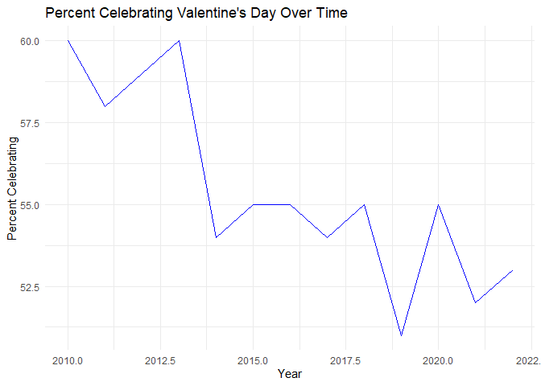

The goal of valentineTool is to provide an analysis tool for Valentine’s Day consumer trends. This package helps users visualize consumer spending over the years for different categories such as candy, flowers, jewelry, and more. The functions in this package are particularly useful for analysts, researchers, and businesses looking to understand changing consumer behavior during Valentine’s Day.
Installation
You can install the development version of valentineTool from GitHub with:
# Install remotes if not already installed
install.packages("remotes")
# Install the package from GitHub
remotes::install_github("ETC5523-2024/assignment-4-packages-and-shiny-apps-ChenghaoZeng")Example
This is a basic example which shows you how to solve a common problem:
library(valentineTool)
library(ggplot2)
# Create the line plot for PercentCelebrating
ggplot(historical_spending, aes(x = Year, y = PercentCelebrating)) +
geom_line(color = "blue") +
labs(title = "Percent Celebrating Valentine's Day Over Time",
x = "Year",
y = "Percent Celebrating") +
theme_minimal()  ## Main Components of valentineTool Package
-
historical_spending Dataset:
The package includes a dataset (historical_spending) that contains data on consumer spending related to Valentine’s Day from various years.
The dataset includes categories like Candy, Flowers, Jewelry, GreetingCards, EveningOut, Clothing, and GiftCards, allowing for in-depth analysis of spending trends across different types of gifts.
-
Visualization Function: plot_trends_custom(data, y_vars):
A function to plot multiple spending trends over time.
This function allows users to select one or more spending categories and generate a line plot to visualize the trends. Different colors are assigned to each category to make the plot easy to interpret.
Filter Spending Data by Year Range:filter_by_year(data, start_year, end_year).
Launch the Valentine’s Day Consumer Trends Shiny App: launch_valentine_app().
-
Package Documentation and Examples
README: The README provides an overview of the package, how to install it, and basic examples of how to use its features. It also contains installation instructions using remotes::install_github() and examples to help users get started.
Vignette:The vignette would provide an in-depth guide on how to use the package. It would include detailed analysis scenarios, step-by-step examples, and real-world use cases.
Function Documentation:Each function has detailed documentation that explains the purpose of the function, its parameters, and example usage.
Shiny App: A Shiny app is included in the package under inst/shiny that allows users to interactively explore different spending trends.